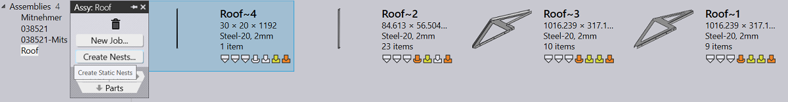
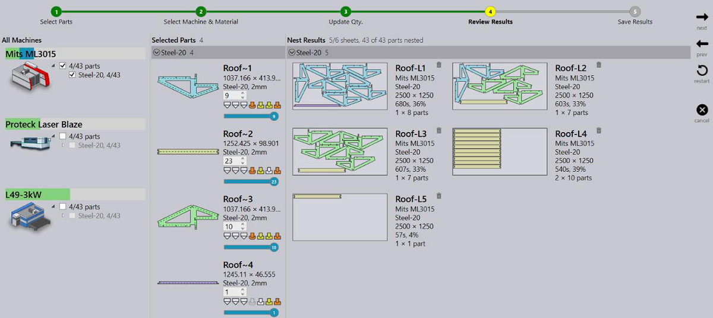
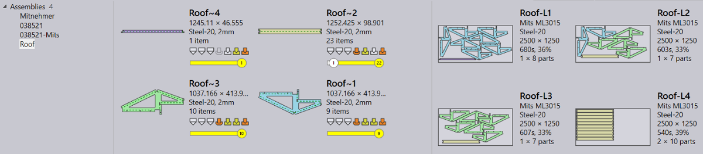
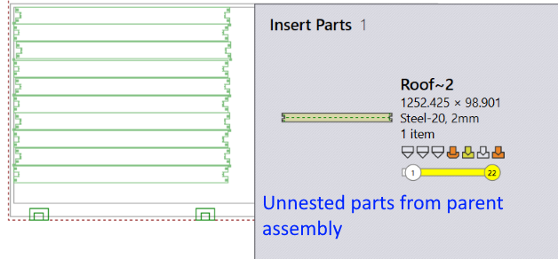
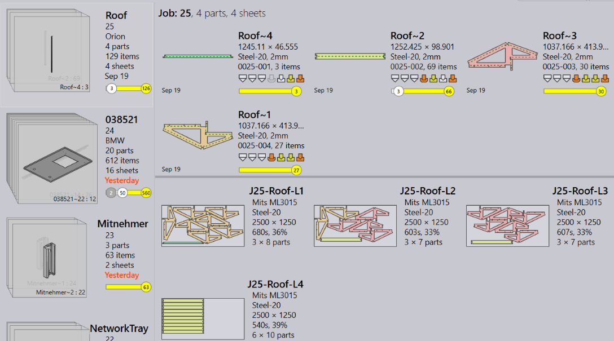

Create Nests from Assembly
A new assembly can be imported from a CSV file.
Use Open → import assemblies… command and select a CSV file to import it as a new assembly. Update the assembly details, quantities or use the Add…/Remove… buttons to update the BOM before importing the assembly and the parts.

Same CSV format used for creating new job can be used for importing new assemblies as well.
Once imported, you can prepare and assign Static Nests to these assemblies.
-
Switch to the assemblies' tab, right click an assembly and use Create Nests… command to launch the assembly nesting wizard.
 -
This is an interactive wizard where you can select machine, sheets, update the quantities, nest and save the results. The generated nests are named after the parent assembly for an easier identification.
 -
Once saved, the nest results are assigned to the assembly as Static nests. And the assembly part status is updated to reflect the nest status. (Notice part Roof~2 status as the nest Roof-L5 was discarded from the results above).
 -
User can edit a static nest to insert un-nested parts from the parent assembly.
 -
Right click on an assembly and use Drop Nests… command to delete all assigned nests.

| Unlike jobs, mixing parts from other assemblies is not allowed for static nests. If allowed, this would prevent an assembly from being released for production without releasing the other. |
Producing a kit
-
Right click and use New Job… command to produce the assembly. JFY+ displays the New Job dialog. Update the assembly count and press OK. Use the regular New Job dialog with the part details to update due date and priority etc. and press OK.

Update the assembly count and press OK. Use the regular New Job dialog with the part details to update due date and priority etc. and press OK.
-
JFY+ creates a job from the assembly, copies the static nests as job nests with the updated sheet counts. The copied nests are named with Job ID prefix. You can edit/delete the job nests without affecting the original kit. Or repack the nests using Adapt/Compact… and Add Parts… commands.
 -
Right click the job and use Plan Job… command to select and assign the press brakes to parts with the bends.